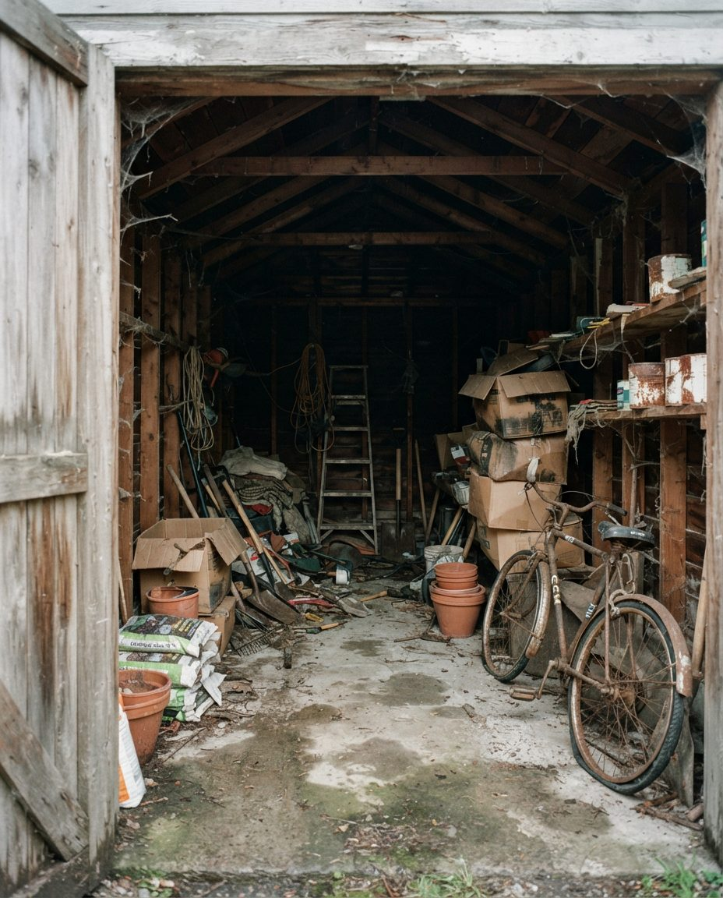

A rental garage is the last place anyone checks at move-out. The tenant hands back the keys on the 31st, the unit looks fine, and then the overhead door goes up on a mattress, four winter tires, a chest freezer, half a dozen paint cans and a stack of boxes nobody can identify. The next tenant moves in on the 1st, or on the 15th if you're lucky, and every day the garage holds up the turnover is a day without rent.
Some of what's in that garage still legally belongs to your former tenant, and Alberta has rules about what you can throw away, what you have to store, and what you can charge back. We clear rental garages in an order that keeps the cleanout from turning into a dispute you then have to defend at the Residential Tenancy Dispute Resolution Service (RTDRS).
Fastest start: text (587) 804-9266 the rental address, three photos (the garage with the door up, the back wall, anything heavy), the date the tenant gave up possession, and the date the next tenant moves in. If you're a property manager with more than one door, say so; we can quote several garages at once.
First, Is the Tenancy Actually Over?
Alberta's abandoned goods rules apply to belongings left behind when a tenant moves out or abandons the rental. They don't apply while the tenancy is still running, even if the tenant has stopped answering texts. Before we load anything, we ask which of these describes your rental:
| Situation | Clear the garage? | What to have in hand |
|---|---|---|
| Lease ended, keys returned, tenant gone | Yes | The date they gave up possession. It starts the 10-day deposit clock. |
| Tenant gave notice, moved out early, lease runs to month-end | Usually wait | Written confirmation from the tenant that they've vacated and are leaving the rest, or wait for the end date. |
| Tenant disappeared mid-lease, rent unpaid, unit empty | Possibly | Your reasons for believing the rental is abandoned, written down with dates and photos. If in doubt, call the RTDRS before we come. |
| Tenant evicted by RTDRS or court order | Yes, after the possession date in the order | A copy of the order. |
| Tenant still living there, garage just overloaded | No | This is a conversation with the tenant, not a cleanout. If they want it cleared, they can book us themselves. |
Government of Alberta guidance says a landlord may enter without notice when there's reason to believe the tenant has abandoned the rental. That lets you walk in and look. Whether the tenancy has ended is a separate question, and it decides what happens to the tenant's things. We'll pause a job rather than clear a garage the law still treats as the tenant's.
The $2,000 Sort, Applied to a Garage
The rule, from the Government of Alberta's landlord and tenant guidance (read November 23, 2026): if you believe the goods left behind are worth less than $2,000, you can dispose of them right away. The same goes for things that would lose most of their value in storage, like food in a garage freezer. If they're worth $2,000 or more, you store them for 30 days. The tenant can reclaim them by paying your moving and storage costs. After 30 days you can sell them by public auction, or by private sale with the court's approval. The government's tenant and landlord flood page adds that you must keep a record for 3 years.
That $2,000 is a total, and it's your estimate, not ours. In a house the total is usually easy to call. Garages are where it gets close, because a garage holds the tenant's most resaleable things. Here's how a typical rental garage splits when we walk it with a landlord:
| Found in the garage | Why it matters for the $2,000 total | What we do on the day |
|---|---|---|
| Power tools, a mitre saw, a tool chest | Brand-name tools resell. A full chest can move the total on its own. | Photograph and set aside until you decide. Nothing with resale value leaves before you've given us the call in writing. |
| Winter tires on rims | A set on rims has resale value in Calgary every October. | Set aside with the tools. If they go, tires go free to the landfill when kept out of the garbage load. |
| Bikes, a snowblower, a kayak | Same: these have a market. | Set aside and photographed. |
| Chest freezer with food in it | Food spoils, so it can go now. The freezer itself is a separate question. | Food out first. Freezer goes with the City's $17 refrigerant fee, or stays if you keep it. |
| Broken furniture, mattress, torn boxes of clothes | Little or no resale value. | Loaded. Usable pieces donated where a charity will take them. |
| Paint, fuel, propane, motor oil, car batteries | No resale value, and they can't go in the garbage. | Taken to a City household hazardous waste drop-off at a fire station. |
| Paperwork, photo albums, ID, mail | Not about money. Personal documents shouldn't go to a landfill. | Boxed, sealed and handed to you, never thrown out by us. |
| A vehicle, trailer or boat | Outside what this page covers. | We don't move it. Ask the RTDRS or a lawyer. |
If you land at $2,000 or more, those items need somewhere to sit for 30 days. If the next tenant isn't moving in yet, that can be a corner of the garage itself, taped off and photographed. If the garage has to be empty, we can move the set-aside items to a storage unit you've rented. We don't keep tenants' belongings ourselves and we don't sell them.

Inspection First, Truck Second
In Alberta the move-out inspection report is mandatory, and it's the document the deposit depends on. The province is blunt about it: a landlord who doesn't meet the inspection report requirements can't deduct anything for damage or cleaning. You can do the inspection without the tenant only if you've offered two opportunities on different days, not on holidays, between 8 a.m. and 8 p.m., and no tenant agreed to come. That's from the Ending a tenancy page.
So the order matters. If we empty the garage before the inspection, the report describes an empty garage, and you've lost your record of what the tenant left. Our sequence:
- You do the move-out inspection, with the garage exactly as the tenant left it. Note it on the report.
- We arrive and photograph everything before touching it: the garage from the door, each wall, the rafters, and close-ups of anything set aside. You get the photos the same day.
- You confirm the set-aside list in writing. A text is fine. It's what you'd want to show the RTDRS if the tenant later asks where the snowblower went.
- We clear the rest, hazardous items first so they can't end up in the garbage load, then the floor and rafters.
- Dry sweep and after photos. Calgary has been under Stage 4 water restrictions since November 4, 2026, and washing a driveway isn't allowed, so there's no floor wash until the City lifts them.
Our photos back up your inspection report; the report itself is still yours to complete.
From Keys Back to Deposit Statement
Three Alberta deadlines run at once after a tenant leaves, and the garage sits in the middle of all of them. Every deadline below comes from the Government of Alberta pages linked above.
| Day | What's due | Where the garage fits |
|---|---|---|
| Day 0 | Tenant gives up possession | Text us photos the same day if you can. We quote before we book. |
| Day 0 to 2 | Move-out inspection | Garage untouched until it's on the report. |
| Day 1 to 5 | Cleanout | Set-aside items photographed and kept. The rest leaves. |
| By day 10 | Full deposit with interest, or a statement of account, or an estimate of deductions, to the tenant | Our invoice gives you real numbers for the statement instead of a guess. |
| By day 30 | Final statement and any money owing to the tenant | If you sent an estimate on day 10, the final invoice is in hand by now. |
| Day 30 after the goods are stored | Unclaimed goods worth $2,000 or more can be sold by public auction, or privately with court approval | We can move them from the garage or storage when you're ready. |
Many leases end on the last day of a month, so that's when every landlord wants a truck. If you know a tenant is leaving, book the garage a week ahead and confirm the date once the keys are back. On a weekday, if the photos reach us before noon, our same-day cleanout can often still make it.
An Invoice Your Statement of Account Can Use
Alberta requires the statement of account to list damages, repair costs, details of cleaning charges and any fees. A single line that says "garage cleanout" is hard to defend. We split the invoice so you can copy each line straight to the statement:
- Garage cleaning: sweeping, removing trash and debris the tenant left.
- Removal and disposal of abandoned goods: listed by type (furniture, mattress, boxes), with the landfill weigh ticket attached.
- Hazardous waste drop-off: what went to the fire station, by item.
- Debris from damage, if any: a broken shelf unit, smashed drywall from the garage wall. Your contractor's repair bill is separate.
- Moving set-aside items to storage, if you asked for it. That's a moving cost the tenant pays if they reclaim the goods.
Which lines you can actually deduct is your call, made with the RTDRS or your lawyer. We give you the split so the call is possible. The invoice is addressed to the owner or the property management company, with the rental address and unit number. Keep it with the before and after photos, your written set-aside list and the weigh tickets. That set is the 3-year record the province expects you to keep.
What Tenants Leave in Calgary Garages
A family emptying a parent's garage, which our estate cleanout page covers, leaves decades of things. A tenant leaves what wasn't worth putting on the moving truck, and it's the same short list most times:
- The things movers won't take: propane tanks, gas cans, paint, aerosol cans, an old car battery. All go to a City household hazardous waste drop-off. Fire Station #20 at 2800 Peacekeepers Way SW is open 8 a.m. to 6 p.m. every day, up to 20 L per visit.
- Winter tires and electronics: free at a City landfill if they're kept out of the garbage. Mix them in and the whole load is charged by weight.
- A garage fridge or chest freezer: $17 refrigerant fee each at the landfill, plus weight. Check for food first; a freezer unplugged since move-out is a different job.
- Mattresses and broken furniture that didn't fit the new place.
- Moving boxes, often wet from snowmelt off a car that was parked inside. Boxes left on a Calgary garage floor through a few chinooks soak up meltwater at the slab edge and draw mice.
- Yard waste bagged in the fall and never put out.
The landfill fees above are the City of Calgary's 2026 rates, the same ones on our garage junk removal cost page: $25 flat for a residential load of 250 kg or less, $113 a tonne above that. The City's landfills close their scales at 5 p.m. and are shut on Sundays, and every load has to be tarped.

Duplexes, Suites and Shared Garages
Plenty of Calgary rentals aren't a whole house with a whole garage. An up-down duplex shares one detached garage off the lane. A house with a legal basement suite gives the garage to one unit, or splits it with a line of tape down the middle. That changes the job when only one tenant leaves.
- Check the leases first. If the garage, or half of it, is part of the remaining tenant's rental, it's their space. Alberta lets a landlord enter on 24 hours' written notice for repairs, inspections, pest control and showings. Clearing out a garage isn't on that list, so get the remaining tenant's agreement in writing before we come.
- Mark the line. We clear only the side or the shelves you point to, and photograph the remaining tenant's things untouched.
- Lane access. Many inner-city duplex garages open only to the back lane. We load from the lane, keep the lane clear for the neighbours' garages, and don't block anyone's door.
- Condo parkade storage lockers follow the building's rules on elevators and move-out times. Send us the property manager's contact and we'll book the service elevator through them.
What Changes the Price
We price a rental garage from photos and give the number before booking. Whole-unit tenant cleanouts are advertised in Calgary at flat rates per unit (on November 23, 2026, calgaryjunk.com listed $479 for a bachelor and $649 for a one-bedroom). A garage doesn't fit a unit size, so these are what move our quote:
- Volume and weight, which decide how many landfill trips and at what rate.
- Refrigerant appliances, each with its own City fee.
- The set-aside work: photographing and holding items for the 30-day rule, and moving them to storage if you need the garage empty.
- The carry: a front-drive garage versus a lane garage behind a duplex with a narrow gate.
- Hazardous items, which go on a separate run to the fire station.
- Several doors at once. If you manage more than one rental with a turnover the same week, one quote covers all of them.
GarageScape carries $2 million in general liability insurance, and we'll send proof before the job if your owner or condo board needs it. More about us is on the about page.
Questions Landlords Ask About Tenant Cleanouts
What can a landlord do with things a tenant left behind in Alberta?
Once the tenant has moved out or abandoned the rental, Alberta's Residential Tenancies Act lets the landlord dispose of the goods right away if the landlord believes they are worth less than $2,000 in total, or if they would lose most of their value in storage. Goods worth $2,000 or more must be stored for 30 days. The tenant can reclaim them in that time by paying the moving and storage costs. After 30 days, the landlord can sell them by public auction or by private sale with court approval. Landlords must keep a record for 3 years. This is a summary of Government of Alberta guidance, not legal advice.
How long can someone leave their belongings on your property in Alberta?
For a residential tenant who has moved out or abandoned the rental, the clock only matters for goods worth $2,000 or more: those must be stored for 30 days before the landlord can sell them by public auction, or by private sale with court approval. Goods the landlord believes are worth less than $2,000 can be disposed of immediately. While the tenancy is still running, the belongings stay where they are, garage included.
Do landlords have to professionally clean between tenants in Alberta?
Alberta does not require a landlord to hire a professional cleaner. What the law controls is the deposit: a landlord can only deduct cleaning costs if the move-in and move-out inspection reports were done properly, and the charges have to be listed on the statement of account. If the lease requires the tenant to leave the place clean and the garage was left full, the inspection report is your evidence.
How much does a tenant cleanout cost in Calgary?
Whole-unit prices in Calgary search results on November 23, 2026 ran from $284 before GST for a one-bedroom move-out clean (Duty Cleaners) to flat tenant cleanout rates of $479 for a bachelor and $649 for a one-bedroom (calgaryjunk.com). A garage is priced on its own. We quote it from photos before booking, and the price moves with volume, landfill weight, fridges and freezers, the carry from a lane garage to the truck, and how much has to be set aside for the 30-day rule.
Can I take the garage cleanout out of the tenant's security deposit?
Cleaning costs can come off the deposit if the inspection report requirements were met, and the deposit, or a statement of account or an estimate, has to reach the tenant within 10 days of them giving up possession. Whether removing abandoned goods counts as a deductible cost depends on your situation, so ask the Residential Tenancy Dispute Resolution Service or your lawyer. Our invoice lists cleaning, hauling of abandoned goods, and anything left from damage on separate lines so you can decide.
Do I need to be at the rental for the cleanout?
No. Most landlords and property managers send a lockbox or door code and the list of what they've set aside. We photograph the garage before anything moves, send the photos, wait for your go-ahead, and send the after photos and invoice when we leave.
Are you insured, and can you bill my property management company?
Yes. GarageScape carries $2 million in general liability insurance and can send proof before the job. The invoice can be addressed to the owner or to the property management company, with the rental address and unit on it.
What won't you take from a rental garage?
We don't touch firearms, ammunition, drugs or anything that looks like it belongs to a police matter; call the police non-emergency line. We don't decide what a tenant's belongings are worth, and we don't sell them. Paint, fuel, propane and chemicals don't go in the garbage load; they go to a City household hazardous waste drop-off. A vehicle, trailer or boat left behind is outside a garage cleanout.
Selling the rental instead of re-renting it? The cleanout before selling page works back from listing photos. If the tenant left far more than a garage's worth, or the conditions inside are unsafe, our hoarding garage cleanup crew handles it. For a booked cleanout at your own home, start at garage cleanout Calgary or our garage cleaning services. Want to haul it yourself? The bin rental page compares a bin with a crew, and once the water restrictions lift, garage floor cleaning gets the oil off before the next tenant parks.